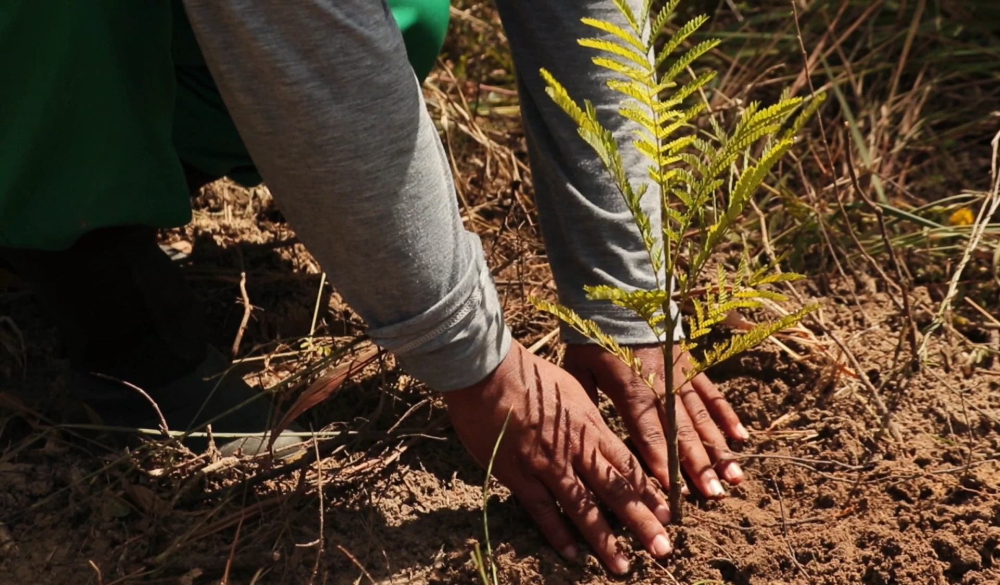
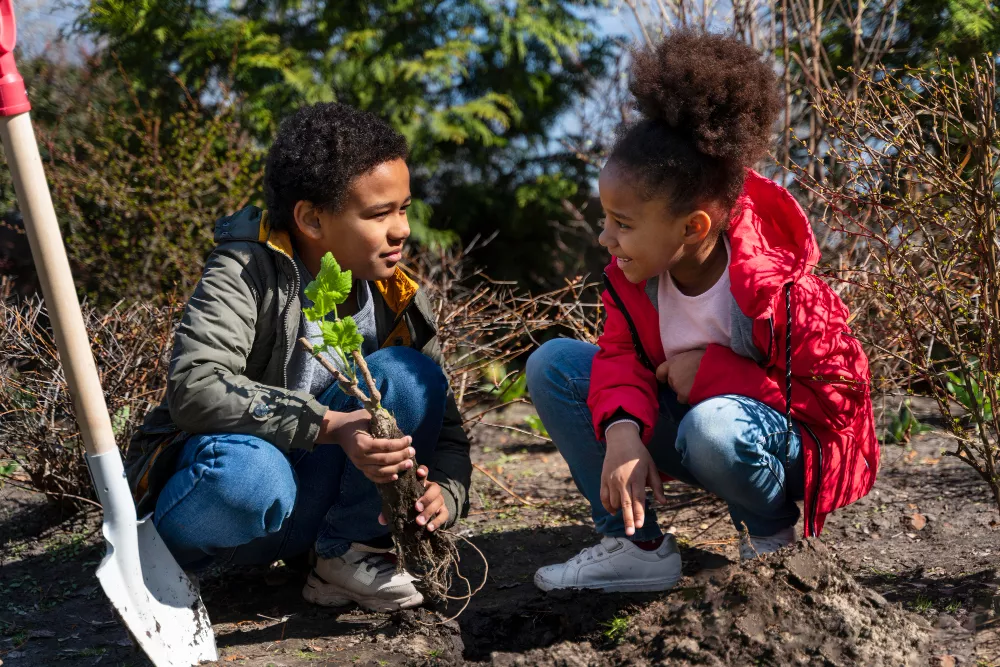
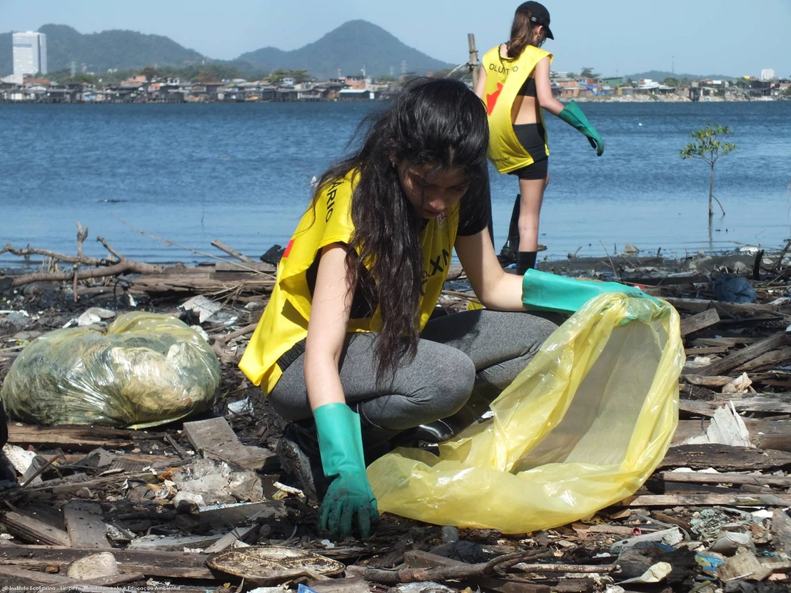

Projetos Sociais
Conheça algumas das principais iniciativas da ONG Verde Esperança em prol do meio ambiente e da conscientização ecológica.

Reflorestamento
Plantio de árvores nativas para recuperar áreas degradadas e promover biodiversidade.

Educação Ambiental
Palestras e oficinas em escolas para conscientizar crianças e jovens sobre sustentabilidade.

Limpeza de Rios
Mutirões para remover resíduos sólidos de rios e córregos, protegendo a fauna e flora local.